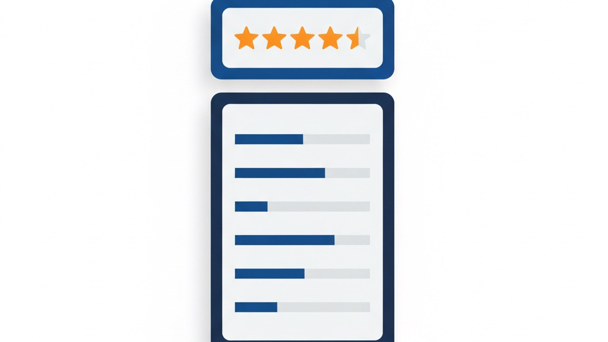

平均★順で並べたら、最も多く声が集まった商品が7位に沈んでいた ——件数の少ないレビューの平均が「最も多く声が集まった商品」を隠す仕組みと、並び順の考え方
業務改善コラム ／ 集客・見える化 ／ 読了目安：約8分
お客様の声ページを整備し、データも揃っている。それなのに「表示設計のミス」一つで、本当に評価されている商品が7位に沈んでいた——そんなことが実際に起きました。正しいデータを集めることと、正しく見せることは別の技術です。今回は「どの数字で並べるか」と「並び順の意味」について整理します。
★4.9（3件）が1位、★4.6（200件超）が7位だった
あるブランドのお客様の声ページを見直していたとき、奇妙なことに気づきました。「このブランドで最も多く声が集まった商品」が、ランキングの7位に沈んでいたのです。
1位に表示されていたのは確かに「★4.9」の商品でした。しかし、その評価件数はわずか3件。一方、7位の商品は200件を超える回答数を持ちながら、平均評価は★4.6でした。
数字だけ見れば「4.9 ＞ 4.6」は正しい比較です。でも「3人全員が高評価をつけた」という事実と、「200人超が平均4.6をつけた」という事実を、同じ土俵で並べていいのか——そこに違和感がありました。
このページの並び順は「平均評価の高い順」に設定されていました。設計した時点では合理的に思えた選択が、結果として最も実績のある商品を埋める構造を生んでいたのです。
件数が少ない平均は「揺れやすい」理由
統計的に言うと、集まった件数が少ないほど平均値は不安定になります。これは直感に反するようで、実は単純な話です。
たとえば5件のレビューは、たまたまブランドの熱狂的なファンが集中した週に集まった可能性があります。逆に、たまたまクレームが重なることもある。どちらも「その商品の真の評価」ではなく、「5件だけをたまたま切り取った、その時点の記録」です。
一方、200件以上の回答は、好意的な感想も厳しい感想も混じった上での平均です。極端な偶然は統計的に打ち消され、実態に近い数値に収束しています。
「平均★が高い順」という並び順は、意図せず件数の少ない商品を上位に押し上げる構造を持っています。これはデータの見せ方における設計ミスの典型例です。

並び順を変えたら、見える景色が変わった
修正自体はシンプルでした。ランキングの並び順を「平均評価の高い順」から「回答数の多い順」に変更しただけです。
結果として、最も多く声が集まった商品がトップに来るようになりました。ページを開いた訪問者が最初に目にする商品が、「少数の熱狂」ではなく「多数の選択」を示すものに変わった。
これは単なる表示順の話にとどまりません。お客様の声ページの役割は「信頼を伝えること」です。「多くの人の声が集まっている」という事実は、初めて訪れた方に対して強い安心感を与えます。逆に言えば、本来そのブランドの看板になるべき商品が7位に沈んでいた状態では、ページ本来の役割を果たせていなかった。
これはネット通販のサイト全般で起きている問題
この問題は特定のブランドに限った話ではありません。自社サイトやLP（商品やサービスを説明する1枚のページ）でお客様の声・レビューを掲載しているすべての事業者に起こりうる問題です。
Amazonや楽天の検索結果でも同様の現象は発生します。「評価が高い順」で絞り込むと、レビューが数件しかない商品が上位に来ることがあります。大手の通販サイトが初期設定で「総合」順を採用しているのも、この問題を踏まえた設計だと考えられます。
自社サイトでお客様の声や事例を掲載している場合、以下の点を一度確認してみてください。
- 件数が1〜5件の商品・事例が上位に来ていないか
- 最も売れている（または問い合わせが多い）商品・サービスが上位に来ているか
- 並び順を変えたとき、表示される内容に自分自身で納得感があるか
- その順番は「訪問者のため」か、それとも「見栄えのため」か
「ページを作った」で終わりにせず、定期的に「この表示は正しく機能しているか」を問い直すことが重要です。
「正しい指標」より先に立つ問い
指標の選び方に絶対の正解はありません。平均★が有効なケースもあります。たとえば、一定の件数（目安として30件以上）を持つ商品同士を比べる場合は、平均評価がそのまま参考になります。
ただし、どの指標を使うにしても、先に立てるべき問いは一つです。
「この並び順は、訪問者に何を伝えているか？」
私が今回の修正で改めて実感したのは、「データが正確でも、表示の設計が間違えると正しく伝わらない」ということです。数字を集めることと、数字を正しく見せることは、別の技術です。
統計学の世界には「ウィルソンの信頼区間」という、件数と平均評価を組み合わせてより信頼できる並び順を計算する方法があります。公開されている情報の範囲では、Amazonなどの大手通販サイトでもこれに近い考え方が使われているように見えます。ただし中小規模の通販サイトや自社サイトの場合、まず「件数順」に切り替えるだけで十分な場合が大半です。複雑な計算より、「最もよく選ばれたものを最初に見せる」という単純な原則を守ることのほうが先決です。
まとめ：データは正しくても、見せ方を間違えると逆効果
今回のケースから得た教訓を整理します。
- 平均★順で並べると、件数が少ない商品が不当に上位に来やすい
- 件数が少ない平均値は統計的に不安定で、実態を反映しないことがある
- 「選ばれている実績」を伝えたいなら、まず件数順が適切
- 指標の設計は「何を訪問者に伝えたいか」という問いから始める
- 正しいデータも、表示設計が間違えていると逆効果になる
お客様の声やレビューのページは「作って終わり」ではありません。どの指標で並べ、何を最初に見せるか——その設計が、訪問者の信頼形成に直接影響します。一度作った並び順を「これでいいはずだ」と放置せず、定期的に見直す習慣を持つことをお勧めします。
お客様の声・事例の見せ方、一度見直してみませんか
「うちのサイトの並び順、これで合ってる？」「どの指標を使えばいいか迷っている」——そんなご相談はLINEでお気軽にメッセージください。ページを実際に見ながら、一緒に考えます。
LINEで相談する